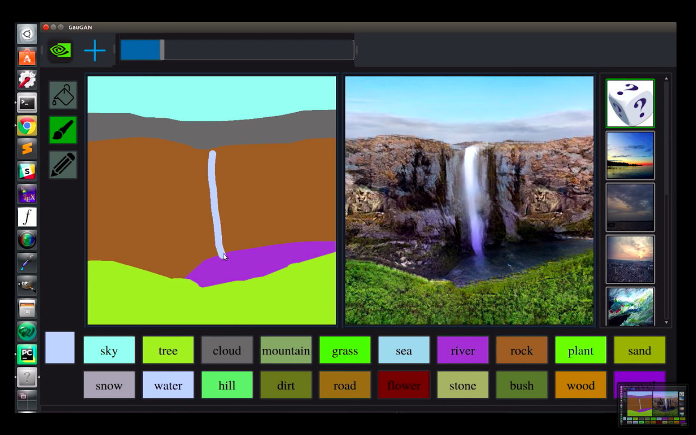

Background
NeuralPaint is a GUI created to interface with a machine learning program called SPADE (short for Spatially-Adaptive Normalization) created by NVIDIA. SPADE is an implementation of a technique known as semantic image synthesis with spatially-adaptive normalization which takes in hand-drawn images as input and outputs photorealistic interpretations of those images. The paper covering this technique can be found here.
Install Project Dependencies
sudo apt-get install -y libblas-dev liblapack-dev libatlas-base-dev gfortran libjpeg-dev zlib1g-dev libfreetype6-dev
Frontend Installation and Setup
The Deep Painting application has both a frontend javascript GUI drawing application and a backend python Flask API to interface with the python SPADE code.
If you have already cloned the main repository containing all threee applications ensure that you have pulled the git submodules with '$ git submodule update –init –recursive' from within the main project directory. This will update the GUI, smoke, particles, and painting applications.
Next, change directories into the painting frontend directory ~/production/painting/frontend and run the following commands.
# Deep Painting Requires node version 8, ionic version 3, and cordova version 8.0.1
# Uninstall to avoid conflicts if not using NVM
npm uninstall -g cordova
npm uninstall -g ionic
# Install correct versions
npm install -g ionic@3.9.2
npm install -g cordova@8
# Install project dependencies
cd ~/production/painting/frontend
npm install
# Build production version to www directory
ionic cordova build browser --prod
Backend Installation and Setup
Change directories into server folder with cd ~/production/painting/frontend and complete the following directions.
Install Pytorch
If you are running this project on NVIDIA Jetson follow the below steps. Else, install Pytorch based on instructions found on the PyTorch Website
# Choose an install location
mkdir [install location]
cd [install location]i
git clone --recursive ttp://github.com/pytorch/pytorch
cd pytorch
# These are to avoid Pytorch CUDA errors when running CUDA 10.
export USE_NCCL=0
export USE_DISTRIBUTED=0
export TORCH_CUDA_ARCH_LIST="5.3;6.2;7.2"i
sudo apt-get install python3-pip cmake
sudo python3 -m pip install -U pip
sudo python3 -m install -U setuptools
sudo python3 -m install -r requirements.txt
sudo python3 -m pip install scikit-build --user
sudo python3 -m pip install ninja --useri
# This will take a long time
python3 setup.py bdist_wheel
sudo python3 setup.py install --user
Install Pillow
If you are running on an NVIDIA Jetson or any other ARM device there may not be a pip wheel available to you for Pillow. To fix this we must build Pillow from source.
cd [install location]
git clone https://github.com/python-pillow/Pillow.git
cd Pillow
sudo python3 setup.py install
Install remaining dependencies with pip
cd ~/production/painting/server
sudo python3 -m pip install -r requirements.txt
Run Frontend and Backend
Running frontend
cd ~/production/painting/frontend/www
python3 -m http.server 8000
Running Backend
cd ~/production/painting/server
sudo python3 server.py
Running Frontend and Backend as Background Services
Both the backend and frontend of the Deep Painting application can be run persistently with minimal resource usage as lost as the server does not have images in its que. This can best be accomplished through the use of supervisord due to its simplicity and dependability when it comes to python programs.
Three System Services Must Be Created
- Supervisord service
- Webpage GUI (frontend) service
- SPADE (backend) service
Supervisord Installation
sudo apt-get install supervisor
sudo supervisord
Ensure that Supervisord is running
$ sudo service supervisor status
Create Frontend and Backend Services
sudo vi /etc/supervisor/conf.d/frontend.conf
Paste the following
[program:frontend]
command/usr/bin/sudo /usr/bin/python3 -m http.server 8000
directory=/home/[Username]/production/painting/frontend
stdout_logfile=/home/[Username]/production/logs/frontend.txt
redirect_stderr=true
autostart=true
autorestart=true
sudo vi /etc/supervisor/conf.d/spade.conf
Paste the following
[program:spade]
user=node-5
directory=/home/node-5/production/painting/server
command=sudo python3 server.py
autostart=true
autorestart=true
Now that you have created both services you need to activiate them using supervisor
sudo supervisorctl
supervisor > reread
supervisor > add test_process
supervisor > status
Supervisord Web Interface
If you want you can monitor your services in using Supervisord's web interface.
To enable this add the following config to the config file found in /etc/supervisor/supervisord.conf
[inet_http_server]
port=*:9001
username=testuser
password=testpass